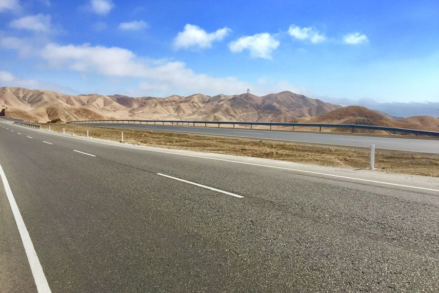

City tour en Tacna saliendo desde Arica
Te llevamos a conocer Tacna en el día: recorrido por el centro, tiempo libre para compras y regreso a Arica, con el cruce de frontera coordinado de principio a fin.
Un día en Tacna, sin complicaciones
Tacna está a poco más de 50 kilómetros de Arica y se conoce bien en un día. El problema nunca es la distancia: es el cruce de frontera, los colectivos compartidos y no saber por dónde partir al llegar. Nosotros resolvemos las tres cosas: vehículo privado, cruce coordinado y un conductor que conoce la ciudad y sabe en qué orden recorrerla.
Te recogemos en tu domicilio u hotel en Arica, cruzamos juntos el complejo fronterizo Chacalluta - Santa Rosa y te acompañamos durante todo el recorrido hasta el regreso.
Qué se recorre
El recorrido habitual incluye el Paseo Cívico con la Catedral de Tacna, el Arco Parabólico, el Campo de la Alianza y el sector del Museo Ferroviario. El itinerario es flexible: si prefieres dedicar más tiempo a un lugar, o cambiar un punto por otro, se ajusta sobre la marcha.
- Recorrido privado: solo tú o tu grupo en el vehículo.
- Conductor que conoce Tacna y los tiempos de la frontera.
- Paradas para fotografías y para comer donde tú quieras.
- Bloque de tiempo libre para compras, con el vehículo esperando.
- Regreso a Arica el mismo día, a la hora que acordemos.

Compras y tiempo libre
Buena parte de quienes van a Tacna aprovechan para comprar. Reservamos un bloque del día para eso y el vehículo queda a tu disposición, así no tienes que cargar bolsas de un lado a otro ni buscar transporte de vuelta con las manos ocupadas.
Documentos para cruzar
Necesitas tu cédula de identidad vigente o pasaporte, y los menores de edad requieren la autorización correspondiente cuando no viajan con ambos padres. Los requisitos migratorios pueden cambiar, así que te confirmamos qué llevar al momento de reservar y te acompañamos durante el trámite.
Si solo necesitas el traslado
Cuando el viaje es por una hora médica, un trámite o una reunión y no por paseo, lo que buscas es nuestro traslado privado de Arica a Tacna. Y si prefieres quedarte en la ciudad, revisa el city tour por Arica.
Preguntas Frecuentes
Lo que más nos preguntan sobre el paseo a Tacna.
¿Cuánto dura el city tour a Tacna?
Es un día completo: se sale temprano desde Arica y se regresa por la tarde. El tiempo total depende del movimiento en el complejo fronterizo Chacalluta - Santa Rosa, que en feriados y fines de semana largos es mayor.
¿Qué documentos necesito para cruzar a Perú?
Cédula de identidad vigente o pasaporte. Los menores de edad requieren autorización cuando no viajan con ambos padres. Como los requisitos migratorios pueden cambiar, te confirmamos qué llevar cuando reservas.
¿Hay tiempo para hacer compras en Tacna?
Sí. Reservamos un bloque del día para compras y el vehículo queda esperando, así puedes dejar las bolsas y seguir el recorrido sin cargarlas.
¿El recorrido es compartido con otras personas?
No. El vehículo es exclusivo para ti o tu grupo, sin esperas para completar asientos y con un itinerario que se adapta a lo que ustedes quieran ver.
Otros servicios
Todo lo que podemos hacer por ti en Arica, la región y Tacna.
¿Nos vamos a Tacna?
Escríbenos ahora por WhatsApp y cotiza tu servicio en minutos.
Atención inmediata, sin esperas, los 7 días de la semana.
También puedes llamarnos: +56 9 9162 2929